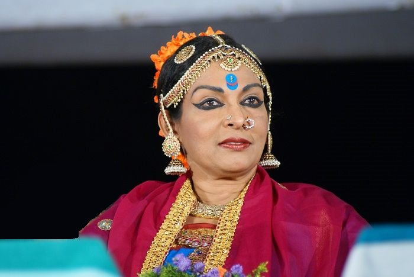
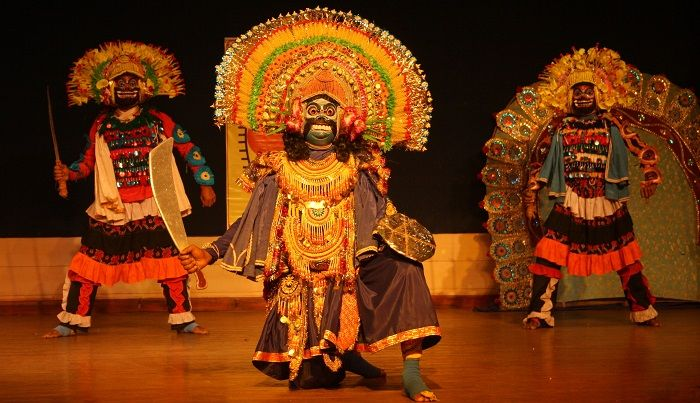

Culture Indian:Dances of India
Dances of India
India is a land of diversities. Various climatic conditions have made India a diverse country. In all spheres of Indian life diversities are clearly visible. These diversities have made the Indian culture a unique one. Like all other aspects of life, the dance forms of India are also varied and different. There are many types of dance forms in India, from those which are deeply religious in content to those which are performed on small occasions. The Indian dances are broadly divided into Classical dances and folk dances. The Classical dances of India are usually spiritual in content. Though the folk dances of India are also spiritual and religious in content but the main force behind the folk dances of India is the celebratory mood. Dances are a form of coherent expression of human feelings. Like the Indian culture, Indian classical dances are equally diverse in nature. There are numerous classical dance forms in India and innumerable folk dances. Each dance form can be traced to different parts of the country. Each form represents the culture and ethos of a particular region or a group of people The most popular classical dance styles of India are Bharatnatyam of Tamil Nadu, Kathakali and Mohiniattam of Kerala, Odissi of Orissa, Kathak of Uttar Pradesh, Kuchipudi of Andhra Pradesh and Manipuri of Manipur.
Indian Classical Dances

India has thousands of year old tradition of fine arts and classical and folk music and dances. Some of the world-famous dance forms that originated and evolved in India are Bharatnatyam, Kathak, Kathakali, Kuchipudi, Manipuri, Mohiniattam and Odissi. All these dance forms use basically the same 'mudras' or signs of hand as a common language of expression and were originally performed in the temples to entertain various Gods and Goddesses.
Indian Classical Dancers
Indian classical dance has a distinct character that reflects the great cultural and traditional endeavor. The forms of Indian dance have transcended beyond the fences and socio-cultural hindrances. Exponents of the Indian classical dance believe that it has the caliber of creating a new and disciplined lifestyle. The Indian Classical Dance is often regarded as the form of worship and meditation. The performers of Indian Classical Dance, despite of the background and forms, have played a crucial role in presenting India to the forefront of the World stage.
Indian Folk Dances
India is a land of varied cultures and traditions. Diversities in all spheres make the Indian culture quite unique. Indian folk and tribal dances are product of different socio-economic set up and traditions. Indian folk and tribal dances are simple and are performed to express joy. In India we have festivals and celebrations virtually every day. This has added to the richness of Indian culture. Since every festival is accompanied by celebration, folk dances have become an integral part of our social milieu.